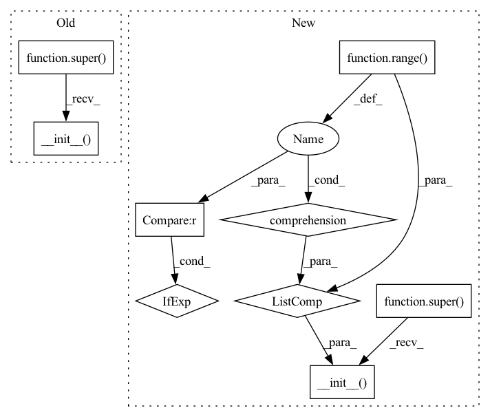

Pattern ID :4024

Before Change
n_layers=1,
k=2,
root_weight=False):
super(DenseDCRNN, self).__init__()
self.input_size = input_size
self.hidden_size = hidden_size
self.n_layers = n_layers
self.k = k
After Change
self.input_size = input_size
self.hidden_size = hidden_size
self.k = k
rnn_cells = [
DenseDCRNNCell(input_size if i == 0 else hidden_size, hidden_size,
k=k, root_weight=root_weight)
for i in range(n_layers)
]
super(DenseDCRNN, self).__init__(rnn_cells, cat_states_layers,
return_only_last_state)
def forward(self, x: Tensor, adj,
h: Optional[Tensor] = None, **kwargs):
support = DenseGraphConvOrderK.compute_support(adj)
In pattern: SUPERPATTERN
Frequency: 4
Non-data size: 9
Instances
Fragment ID: 15015653
Project Name: torchspatiotemporal/tsl
Commit Name: acade09a6f966fa0546f78fdd97f0a4ca291ec76
Time: 2022-12-13
Author: ivan.marisca@hotmail.it
File Name: tsl/nn/blocks/encoders/dense_dcrnn.py
M Class Name: DenseDCRNN
N Class Name: DenseDCRNN
M Method Name: __init__(8)
N Method Name: __init__(6)
M Parent Class: RNNBase
N Parent Class: _GraphRNN
M File Name: tsl/nn/blocks/encoders/dense_dcrnn.py
N File Name: tsl/nn/blocks/encoders/dense_dcrnn.py
M Start Line: 61
M End Line: 78
N Start Line: 71
N End Line: 84
'>
Before Change
hidden_size,
n_layers=1,
root_weight=True):
super(GraphConvLSTM, self).__init__()
self.input_size = input_size
self.hidden_size = hidden_size
self.n_layers = n_layers
self.rnn_cells = nn.ModuleList()
After Change
**kwargs):
self.input_size = input_size
self.hidden_size = hidden_size
rnn_cells = [
GraphConvLSTMCell(input_size if i == 0 else hidden_size,
hidden_size, asymmetric_norm=asymmetric_norm,
root_weight=root_weight, activation=activation,
bias=bias, cached=cached,
**kwargs)
for i in range(n_layers)
]
super(GraphConvLSTM, self).__init__(rnn_cells, cat_states_layers,
return_only_last_state)
'>
Fragment ID: 15015652
Project Name: torchspatiotemporal/tsl
Commit Name: acade09a6f966fa0546f78fdd97f0a4ca291ec76
Time: 2022-12-13
Author: ivan.marisca@hotmail.it
File Name: tsl/nn/blocks/encoders/gclstm.py
M Class Name: GraphConvLSTM
N Class Name: GraphConvLSTM
M Method Name: __init__(11)
N Method Name: __init__(5)
M Parent Class: RNNBase
N Parent Class: _GraphRNN
M File Name: tsl/nn/blocks/encoders/gclstm.py
N File Name: tsl/nn/blocks/encoders/gclstm.py
M Start Line: 41
M End Line: 54
N Start Line: 69
N End Line: 89
'>
Before Change
n_layers=1,
k=2,
root_weight=True):
super(DCRNN, self).__init__()
self.input_size = input_size
self.hidden_size = hidden_size
self.n_layers = n_layers
self.k = k
After Change
self.input_size = input_size
self.hidden_size = hidden_size
self.k = k
rnn_cells = [
DCRNNCell(input_size if i == 0 else hidden_size, hidden_size, k=k,
root_weight=root_weight,
add_backward=add_backward,
bias=bias)
for i in range(n_layers)
]
super(DCRNN, self).__init__(rnn_cells, cat_states_layers,
return_only_last_state)
'>
Fragment ID: 15015654
Project Name: torchspatiotemporal/tsl
Commit Name: acade09a6f966fa0546f78fdd97f0a4ca291ec76
Time: 2022-12-13
Author: ivan.marisca@hotmail.it
File Name: tsl/nn/blocks/encoders/dcrnn.py
M Class Name: DCRNN
N Class Name: DCRNN
M Method Name: __init__(10)
N Method Name: __init__(6)
M Parent Class: RNNBase
N Parent Class: _GraphRNN
M File Name: tsl/nn/blocks/encoders/dcrnn.py
N File Name: tsl/nn/blocks/encoders/dcrnn.py
M Start Line: 42
M End Line: 58
N Start Line: 56
N End Line: 74
'>
Before Change
hidden_size,
n_layers=1,
root_weight=True):
super(GraphConvGRU, self).__init__()
self.input_size = input_size
self.hidden_size = hidden_size
self.n_layers = n_layers
self.rnn_cells = nn.ModuleList()
After Change
**kwargs):
self.input_size = input_size
self.hidden_size = hidden_size
rnn_cells = [
GraphConvGRUCell(input_size if i == 0 else hidden_size, hidden_size,
asymmetric_norm=asymmetric_norm,
root_weight=root_weight, activation=activation,
bias=bias, cached=cached,
**kwargs)
for i in range(n_layers)
]
super(GraphConvGRU, self).__init__(rnn_cells, cat_states_layers,
return_only_last_state)
'>
Fragment ID: 15015651
Project Name: torchspatiotemporal/tsl
Commit Name: acade09a6f966fa0546f78fdd97f0a4ca291ec76
Time: 2022-12-13
Author: ivan.marisca@hotmail.it
File Name: tsl/nn/blocks/encoders/gcgru.py
M Class Name: GraphConvGRU
N Class Name: GraphConvGRU
M Method Name: __init__(11)
N Method Name: __init__(5)
M Parent Class: RNNBase
N Parent Class: _GraphRNN
M File Name: tsl/nn/blocks/encoders/gcgru.py
N File Name: tsl/nn/blocks/encoders/gcgru.py
M Start Line: 39
M End Line: 52
N Start Line: 62
N End Line: 82